釧路～知床


朝起きると快晴のぬけるような青い空が広がっていた。今日こそ絶好のツーリング日和だ。
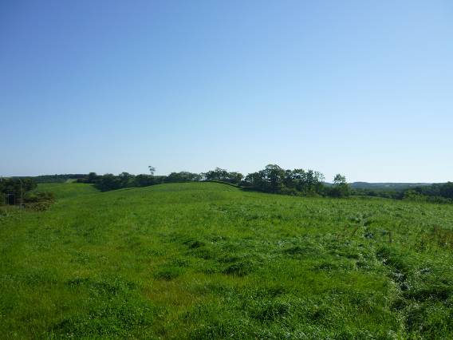
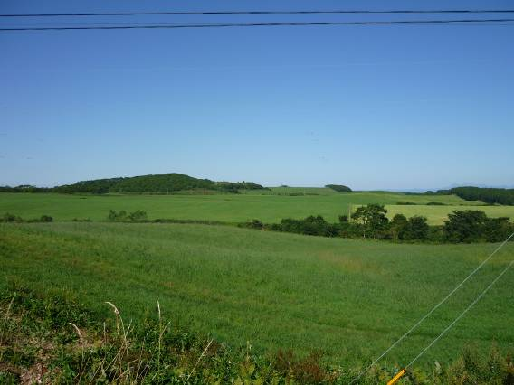
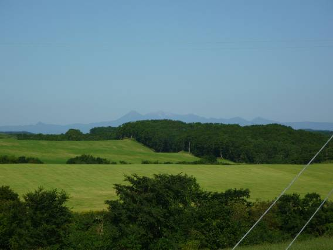
釧路を過ぎ、ミルクロードと呼ばれる国道わきに広がる牧場。遠くには昨日通過した大雪山系も見える。

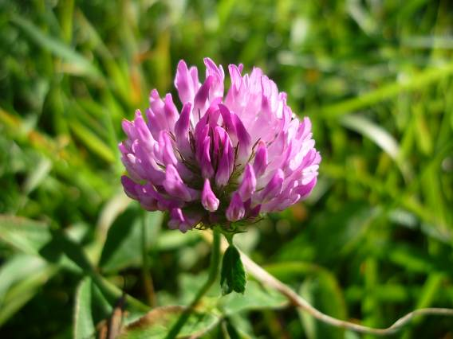
牧場に咲いていた花々。
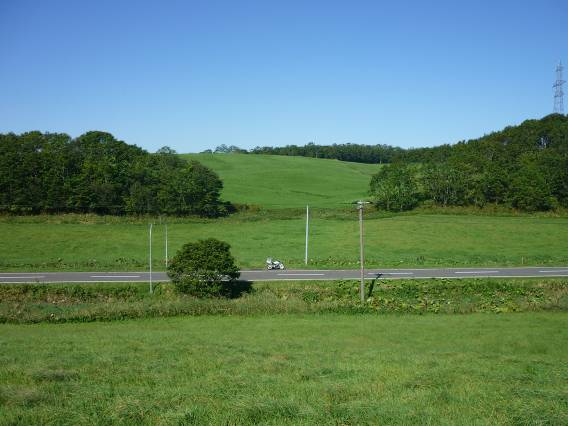
ポツンとホーネット。


牧場がどこまでも続く。途中、牛が群れていた。牧場なので牛がいるのは当たり前だが、牛密度が低すぎる。これでは飼い主は大変なのではないかと思った。
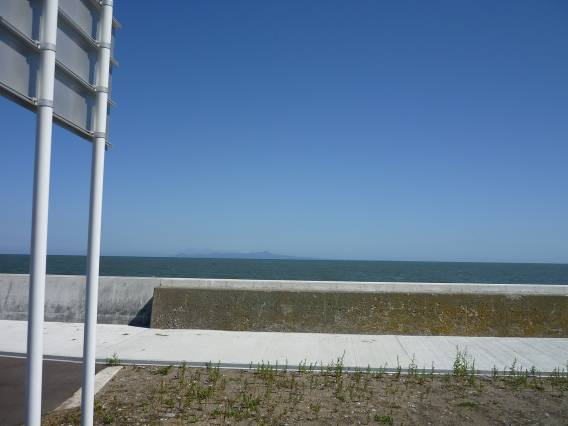
牧草地帯を抜け、標津町へ。オホーツク海の向こうには、北方領土の国後島が見える。泳いで渡るというわけにはいかないだろうが、大間から北海道を見たときくらいの距離に感じる。
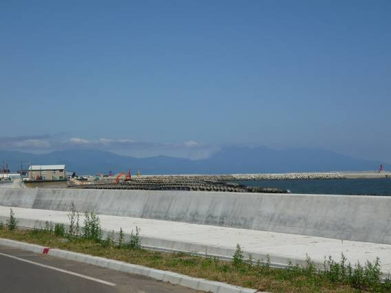
標津町から見た知床半島。
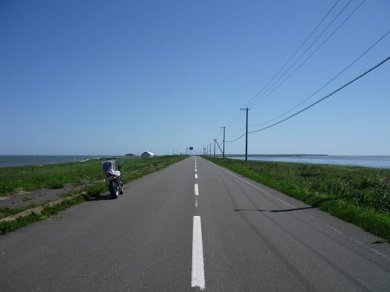
標津町から野付半島に向かう。日本最大の砂州で、この直線道路の両側には海が広がっている。

野付半島の原生花園。昔はトドマツという松が生い茂っていたそうだが、海面の上昇のためか、現在では立ち枯れてしまっている。
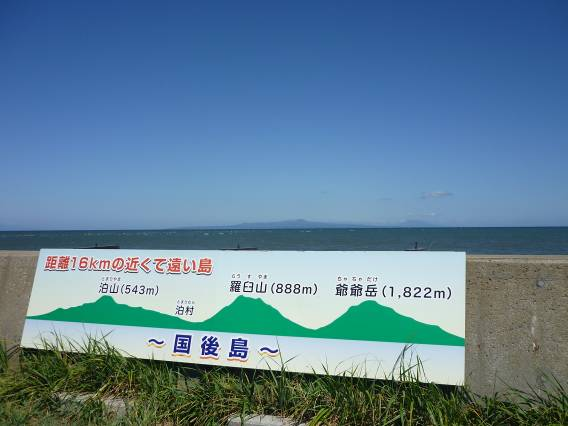
野付半島からだと国後島は16kmの距離しかないようだ。大間～函館間の半分以下の距離である。双眼鏡で国後島の海岸を見てみると、建物も見えた。ロシア人も5000人ほど居住しているというから、北方問題の解決は現実味が感じられなかった。歯舞諸島では、国境警備隊のみが住んでいるとのことだ。

野付半島にある北方領土センターにて。トリの剥製。
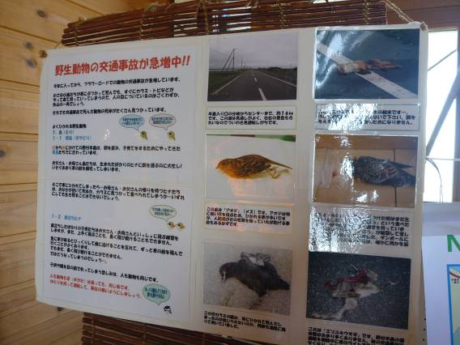
センター内に掲載されていたポスター。動物のひき逃げ事故が絶えないという。
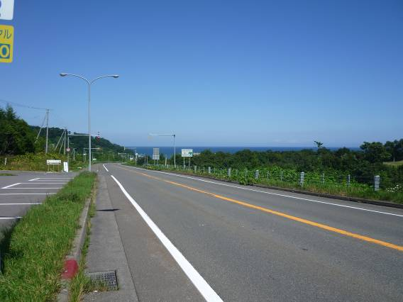
海岸線を羅臼に向けてひた走る。
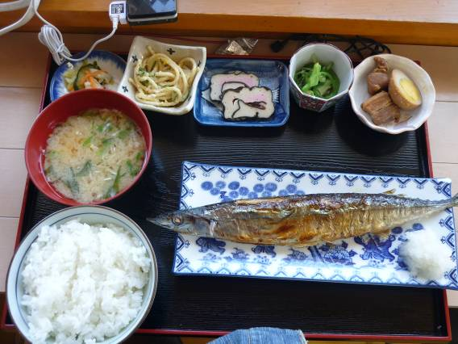
羅臼の道の駅で食べた秋刀魚焼き定食。旬には少し早いかもしれないが、とても美味。値段もこれだけのボリュームで800円程度だったと思う。

羅臼の海岸はカモメに埋め尽くされていた。
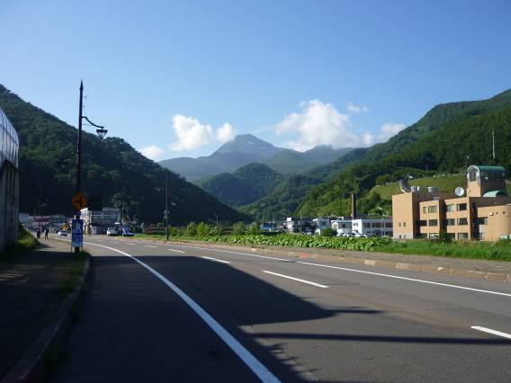
羅臼町から見た羅臼岳。迫力のある山だ。今から羅臼岳の基部である知床峠を越え、知床半島を横断する。
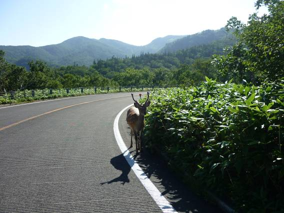
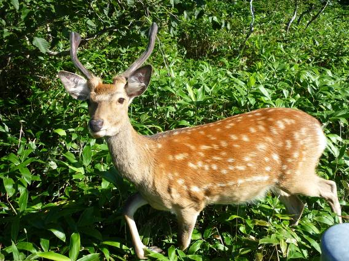
知床峠付近でシカが出没！あわててバイクをとめて近寄ってみる。が、逃げない。人間に慣れているのだろうか。警戒心の強いはずのシカが逃げないのは不思議だった。2枚ともズームではない。1mくらいの距離にまで近づくことができた。かわいい。

知床峠から見た羅臼岳。雄大な山だ。登ってみたくなってしまう。
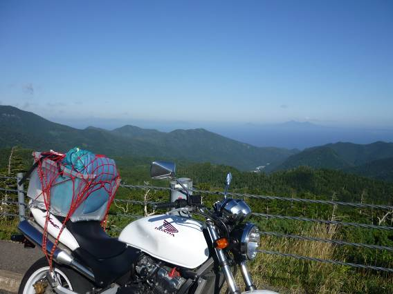
同じく、峠から見た羅臼側の樹海。遠方に望むのは国後島。択捉島も少しばかり見えていた。
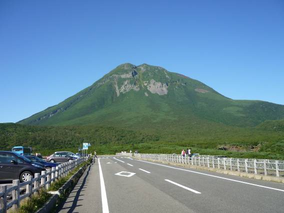
もう一度、羅臼岳。これより先端部は、ヒグマの聖地でもある。残念ながら今回の旅では一度もお目にかかることはできなかった。